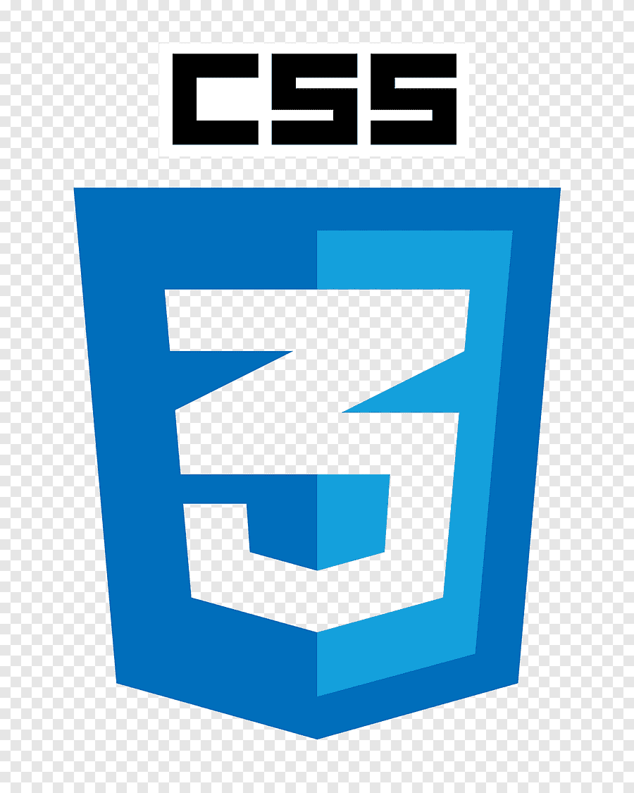

Mi Porfolio
Mis Datos:
Nombre completo: Nicolas Martin Ruiz
Edad: 21 años
Contacto: 1133867718
Correo: nicolasmruiz2580@gmail.com
Mi trayectoria:
A lo largo de mi trayectoria de estudio aprendi diversos lenguajes de programacio, distintos paradigmas y distintas formas de llevar a cabo una misma tarea.
La carrera se enfoca no solo en la programacion sino tambien en la formulacion de diagramas que permitan analizar y comprender de manera mas sensilla las relaciones entre
objetos o clases y que funciones tiene cada una. Para ello se lleva a cabo un estudio objetivo de cada proposito y de cada organizacion, con el fin de entender cada factor
que es relevante para llevar a cabo un sistema que solucione dicha necesidad.
Mi trayectoria todavia es corta, por lo que proyectos de momento sean pocos, a medida que avance la carrera planeo aumentar la cantidad de proyectos, de manera que
incluya tambien un blog de fisica, un blog didactico y un blog de programacion. De esta manera ademas de practicar desarrollo de paginas web tambien podre poner
en practica mis habilidades de enseñanda mediante estas paginas, aprovechando a repasar contenido y estudiarlo para posteriormente hacer nuevos blogs.
mis lenguajes:
Sobre mi:
Soy un estudiante de analista de sistemas, me gusta la programacion y el desarrollo de sistemas, me gusta en general todo lo que referente a estrategia o juegos que te inciten a pensar. Para mi eso es la programacion, no es mas que un complejo rompecabezas con piezas dificiles de entender, puede que no Ademas de mis estudios de analista de sistemas a la par estudio la carrera de profesorado de fisica, por lo que llevo un entendimiento respecto a los metodos de enseñanza no solo de la fisica sino tambien de la infomatica en general, tanto sofware como harware y los fenomenos detras de ambos.
